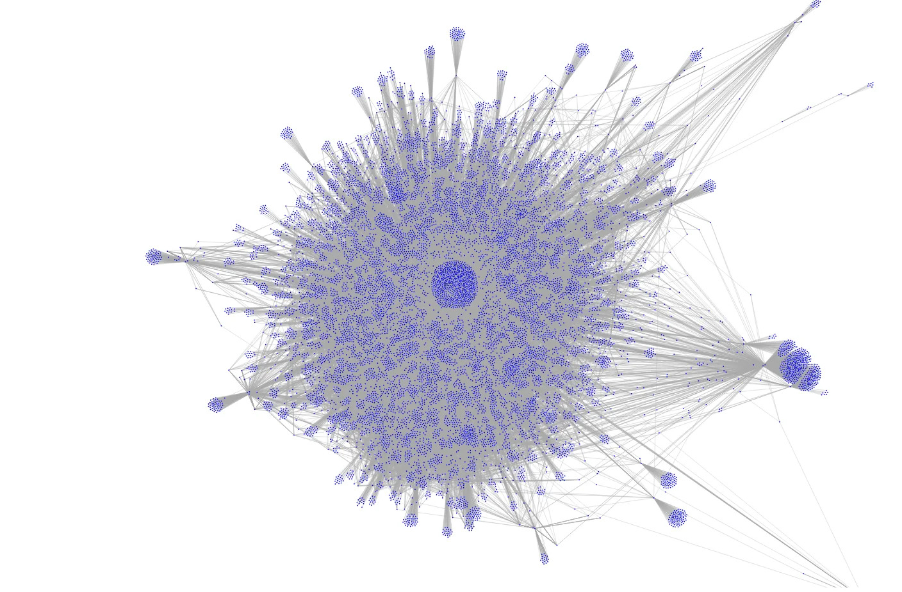

this project is an experiment in understanding how the massive amount of public information on the internet can be organized, connected, and explored through artificial intelligence.
the idea is to build a framework capable of collecting publicly available data, processing it, and transforming disconnected pieces of information into a structured knowledge graph. instead of searching through individual pages, the system builds relationships between entities, events, topics, and sources to create a more complete view of how information connects.
the core of the project is a network of specialized ai agents working together. each agent has a specific role: collecting information, analyzing content, identifying patterns, improving classifications, and correcting previous assumptions. the system continuously refines its understanding of the data rather than relying on a single static model.
each analyzed entity is represented through a dynamic profile built from available information, timelines, interactions, and related connections. the objective is not simply to store data, but to create an explorable model of information, a way to navigate through the relationships hidden inside the internet.
the visualization side of the project focuses on creating a "network view" of these connections: an interactive graph where nodes represent entities, events, or sources, and edges represent relationships between them. the result is closer to exploring a living map of information rather than reading isolated search results.
a future extension of this project is hexar, a hardware platform designed around six antennas and one processing unit. shaped like a hexagon, it acts as a configurable radio sensing platform capable of scanning selected frequencies and assisting with pattern recognition. the goal is to explore how physical signals and digital information could eventually be combined into a single analysis system.
technically, the project combines concepts from distributed systems, machine learning, graph databases, natural language processing, autonomous agents, and signal processing. the challenge is not collecting information, the internet already has an absurd amount of it. the challenge is teaching machines how to organize it, understand context, and separate meaningful signals from noise.
the final goal is to explore what happens when you combine large-scale information analysis with adaptive ai systems: creating tools that can help researchers, analysts, and developers understand complex environments in a way that traditional search engines cannot.

a graphing tool for osint. how mosaic would look like